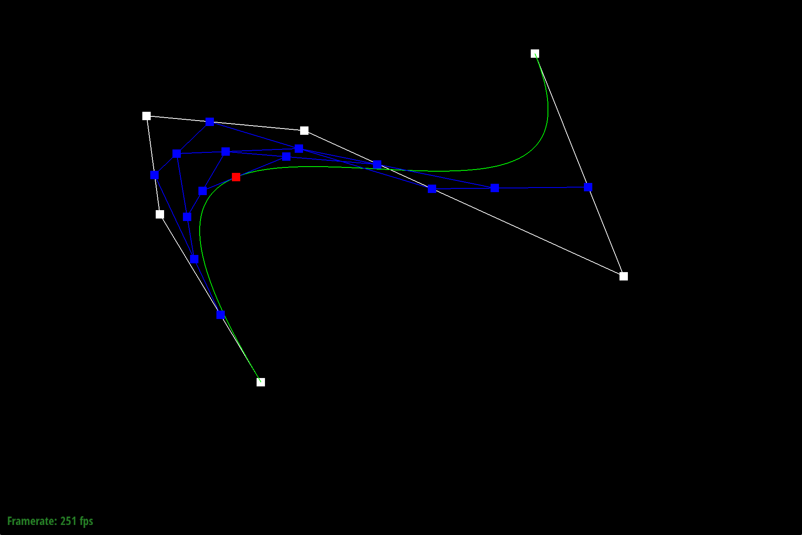
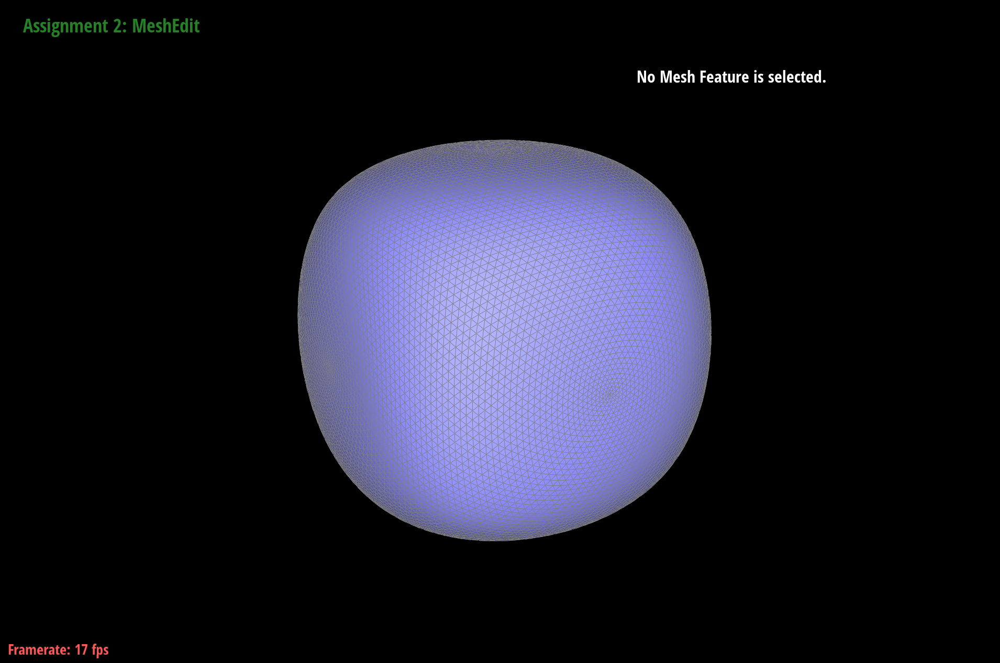

CS 184: Computer Graphics and Imaging, Spring 2019
Project 2: Mesh Editor
Jessica Lee
Overview
In this project, I created a mesh editor using Bezier curves with de Casteljau's algorithm. I implemented functions to split and flip edges, and used them to upsample meshes with loop subdivision. The most difficult part of this project was debugging. I really enjoyed how I could visually see what I was coding, as well as how my mistakes/bugs were being visually represented.
Section I: Bezier Curves and Surfaces
Part 1: Bezier curves with 1D de Casteljau subdivision
de Casteljau's algorithm uses a series of control points to create a smooth Bezier curve. From k+1 points, we can create a new set of k points by computing the linear interpolation between every two points. We can do this iteratively until we are left with a single point. I implemented deCasteljau's algorithm by implementing the iterative step: using the control points from the last evaluated level, find the intermediate control points by applying lerp on the x and y values for pairs of points, then adding the resultant points as a new evaluated level of control points.
|
6 control points
|
.png) First call to evaluate step
First call to evaluate step
|
Second call to evaluate step
|
|
Third call to evaluate step
|
Fourth call to evaluate step
|
Fifth call to evaluate step
|
|
Completed curve
|
Modified t value
|

Moved points around and modified t value
|
Part 2: Bezier surfaces with separable 1D de Casteljau subdivision
de Casteljau's algorithm can be applied to 2D surfaces as well. Given 4x4 control points, we can first apply deCasteljau's algorithm in one dimension to each 4x1 control points. Then the points on the corresponding curves on these 4 Bezier curves are the control points in 2D for the "moving" Bezuer curve. We can again apply deCasteljau's algorithm on them to evaluate the point on the "moving" curve.
I implemented this in my program by creating a helper function that uses 1D de Casteljau's subdivision to find a point given four control points that lie on a single curve. I did this with two nested for loops. Then using this helper function, I evaluated point u in each of the 4 Bezier curves in u. Then I used the same helper function to evaluate point v on the "moving" Bezier curve from the resultant point u's.
I struggled with finding a bug for converting polygons to half-edge mesh, since apparently at least one of the vertices was nonmanifold. It turned out this was happening because I wasn't clearing my vector of Vertex3D's that I was using to store intermediate control points, so I just made sure I cleared it after each loop.
Teapot rendering.
Section II: Sampling
Part 3: Average normals for half-edge meshes
I implemented the Vertex::normal function that computes the area-weighted average normal vector at a vertex v. To do this, I summed the cross product of each consecutive pair of adjacent edges incident with v, and then normalized the sum. To find the vectors to cross product, I first found the positions of vertices u and v for edge (u, v) and then subtracted the position of u from v to get the vector of edge (u, v). I had to make sure to compute the cross product using one inward pointing vector and one outward pointing vector, as opposed to two outward pointing vectors (which I did at first). This way the normal vector would be pointing in the right direction.
|
Default OpenGL shading without smoothed normals
|
.png) Default OpenGL shading with smoothed normals
Default OpenGL shading with smoothed normals
|
Part 4: Half-edge flip
I first drew a diagram of the neighborhood before and after an edge flip, labeling all the half-edges, edges, faces, and vertices. Then I collected all the elements from the "before" diagram and reassigned them according to my "after" diagram, making sure that I set all pointers inside every half-edge. One bug I had was not realizing I set h7->next() = h6->next() instead of h7->next() = h7->next(). It caused my program to load forever when I flipped an edge. When I rewrote my code using the setNeighbors helper, I caught my mistake and everything worked properly after fixing it :).
|
Original mesh before flipping edges
|
After flipping edges
|
Flipped some more edges
|
Part 5: Half-edge split
I implemented the half-edge split operation by once again drawing diagrams of a neighborhood before and after an edge split. I collected all the elements based on the "before" diagram, then allocated new elements and reassigned/assigned elements based on the "after" diagram. More specifically, I created a new vertex (amongst a bunch of other new elements) and set its position to be the average of two opposing vertices. An interesting debugging trick I used was to use the cube to debug since it has the simplest mesh. When I applied an edge split, I could see precisely what vertices the edges were connected to, which was really helpful when I was reassigning an edge's corresponding verex incorrectly. Additionally, at first I had moved one of the original vertices to become the midpoint vertex and created another vertex to replace where the original vertex used to be; however, I soon realized when trying to split edges on the cube that I should create a new vertex at the midpoint and not change the original vertices' positions. This solved all my bugs.
|
Original mesh before splitting or flipping edges
|
After splitting edges
|
After a combination of edge splits and flips
|
Part 6: Loop subdivision for mesh upsampling
I implemented loop subdivision by splitting every edge in the mesh and flipping any newly created edges that connected an old vertex with a new vertex. I also calculated the new positions of every old and new vertex. I used the newPosition field to temporarily store them, and flagged whether or not edges/vertices were new with the isNew field. One debugging trick I was used was to comment out parts of my code to isolate where the issue was occuring. It turned out my split function had some bugs, and I wasn't assigning the proper position to the new vertices.
I noticed after loop subdivision, sharp corners and edges became rounder/smoother. This is demonstrated in the following photos of increased upsampling:
This effect of rounding out edges can be decreased by pre-splitting edges. For example:
 Original mesh
Original mesh
|
Pre-split edges
|
|
Upsample
|
Upsample
|
|
Result of pre-splitting edges
|
Result of not pre-splitting edges
|
We can preprocess the cube so that it subdivides symmetrically by adding an extra edge split on each face like so:
|
Cube with extra edge splits
|

After upsampling
|
|
Original mesh
|
Split all edges going across each face
|
We can also preprocess the cube to subdivide symmetrically by adding edge splits and flips as demonstrated below:
|
Flipped every bordering edge
|
Upsampled
|
|
More upsampling
|
Some more upsampling
|
|
Even more upsampling
|
A lot of upsampling
|